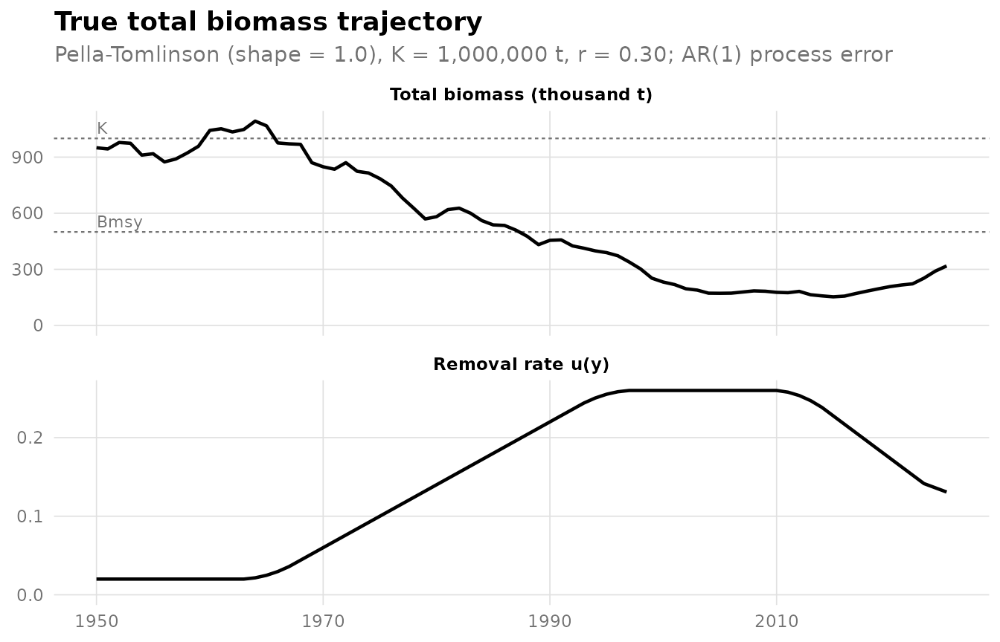
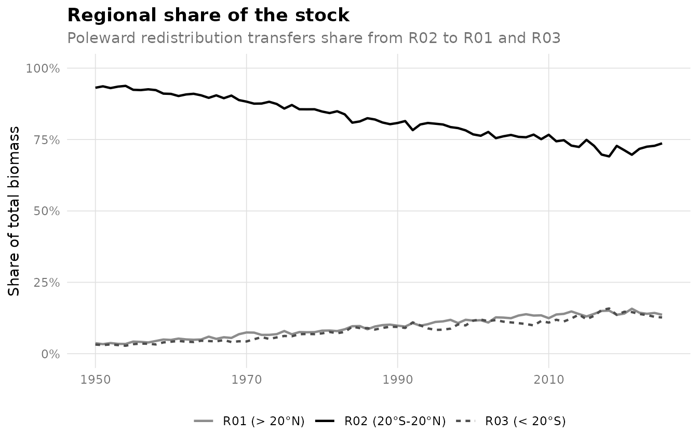
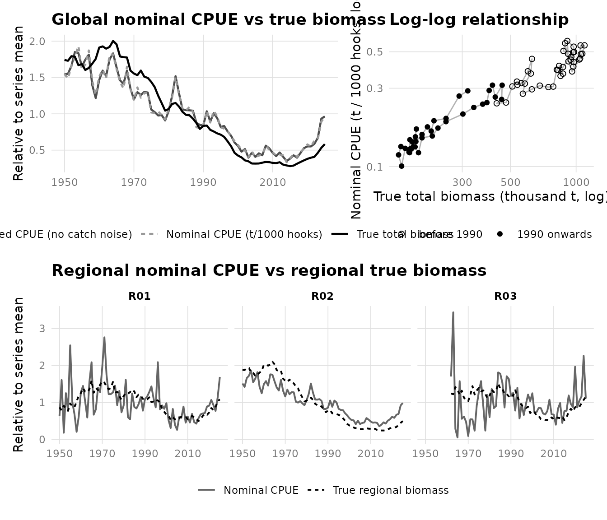

pelagicOM builds a completely known operating
truth for testing CPUE standardisation methods. It has two
parts, run one after the other:
- Biomass (Part I): total biomass \(B_{total}(y)\) from a Pella-Tomlinson model with an exogenous removal rate, distributed over a 1x1 degree grid as \(B(y,s) = B_{total}(y)\,p(y,s)\). The weights \(p(y,s)\) come from a static habitat (latitudinal envelope, hotspots, gradient, persistent Gaussian random field), a redistribution of the envelope in time and spatio-temporal AR(1) noise.
- Fishery (Part II): set-by-set pelagic longline operations on top of the biomass truth. It covers fleets, vessels with careers, trips and sets, location by preferential sampling and fidelity, latent fishing strategies, hooks and hooks between floats (HBF), the components of log catchability, Tweedie catches and companion species. Observation profiles and scenario data sets are generated from the result.
The "BET_ICCAT" preset is the bigeye tuna operating
model of Experimento 02 and reproduces its results bit for bit.
library(pelagicOM)
om_presets()[, c("preset", "species", "area")]
#> preset species
#> 1 BET_ICCAT Bigeye tuna (Thunnus obesus)
#> area
#> 1 ICCAT BET-A stock area, 1x1 degree grid1. Biomass truth
bcfg <- om_biomass_config("BET_ICCAT")
bcfg
#> <pelagicOM biomass configuration> label 'base' | seed 20261005 | 1950-2025 | stock area BET-A
#> sections: general, temporal, spatial, population, habitat, shift, stochastic, output
#> population: pella_tomlinson, K = 1e+06, r = 0.3, shape = 1, B0/K = 0.95
#> habitat: latitude envelope, centre 0, sd N/S 11/11, 2 hotspot(s); shift on; noise on
sim <- simulate_biomass(bcfg, verbose = FALSE)
sim
#> <pelagicOM biomass truth> label 'base' | seed 20261005
#> 10051 cells x 76 years (1950-2025) | stock area BET-A
#> B_total: 950,000 t (1950) -> 318,101 t (2025) | B/K 0.95 -> 0.32 | Bmsy 5e+05 t
#> regional share: R01 0.04 -> 0.14 | R02 0.93 -> 0.74 | R03 0.03 -> 0.13
head(regional_summary(sim), 3)
#> Year Region N_cells Area_km2 Biomass Share Mean_density
#> 1950 1950 R01 4519 33645806 34833.40 0.03666674 0.001035297
#> 19501 1950 R02 2368 26975142 884745.28 0.93131082 0.032798541
#> 19502 1950 R03 3164 28135728 30421.32 0.03202244 0.001081235
fig_total_biomass(sim)
fig_region_share(sim)
2. Fishery truth and scenario data sets
The full BET fishery has about 1.1 million sets and takes around 15 s. Here the fleets are reduced to keep the vignette fast:
fcfg <- om_fishery_config("BET_ICCAT",
fleets = list(A = list(n_vessels = 6), B = list(n_vessels = 6),
C = list(n_vessels = 5), D = list(n_vessels = 5),
E = list(n_vessels = 4)))
fish <- simulate_fishery(sim, fcfg, verbose = FALSE)
fish
#> <pelagicOM fishery truth> label 'base'
#> 156,348 sets | 13,568 trips | 107 vessels | 5 fleets | 1950-2025
#> target catch: total 73,779 t | mean 0.472 t/set | zeros 49.2%
#> sets by fleet x region:
#>
#> R01 R02 R03
#> A 4565 35435 0
#> B 2182 36839 0
#> C 3414 26076 0
#> D 0 25205 2285
#> E 0 17059 3288
scen <- generate_scenarios(fish, verbose = FALSE)
scen
#> <pelagicOM scenario data sets> 8 data sets
#> 01_global_complete 156348 sets R01+R02+R03 complete
#> 02_global_without_hbf 156348 sets R01+R02+R03 complete
#> 03_R02_complete 140614 sets R02 complete
#> 04_global_temporal_uncertainty 147996 sets R01+R02+R03 temporal
#> 05_R02_temporal_uncertainty 132718 sets R02 temporal
#> 06_R01_complete 10161 sets R01 complete
#> 07_R03_complete 5573 sets R03 complete
#> 08_R02_without_hbf 140614 sets R02 completeThe true data keep every latent variable (true strategy, density, catchability components, expected catch). The scenario data sets keep only what a real logbook would contain:
fish$latent_columns[1:10]
#> [1] "TrueFishingStrategy" "TrueDensity" "TrueBiomass"
#> [4] "TrueCatchability" "log_q" "q_fleet"
#> [7] "q_vessel" "q_strategy" "q_hbf"
#> [10] "q_creep"
names(scen$datasets[["04_global_temporal_uncertainty"]])
#> [1] "Year" "Quarter" "Fleet"
#> [4] "VesselID" "TripID" "SetID"
#> [7] "Hooks" "HooksBetweenFloats" "FishingStrategy"
#> [10] "Region" "Longitude" "Latitude"
#> [13] "Cell_ID" "Catch" "Catch_YFT"
#> [16] "Catch_ALB" "Catch_SWO" "Catch_BSH"
fig_cpue_vs_biomass(fish)
3. Tuning the operating model
Every parameter is in the two configuration lists.
om_config_update() (or the ... of the
configuration functions) merges named lists level by level. Vectors and
unnamed lists, such as hotspots or scenarios, are replaced as a whole,
and NULL removes an element.
cfg_fast <- om_config_update(bcfg,
population = list(r = 0.45, decline = list(u_peak = 0.35)),
shift = list(enabled = FALSE))
c(cfg_fast$population$r, cfg_fast$population$decline$u_peak)
#> [1] 0.45 0.35An alternative hypothesis for BET
Below, BET follows a different hypothesis, with the structure of Experimento 02 unchanged (three regions R01-R03, five fleets, eight scenarios):
- the envelope widens only to the north, and its centre drifts 3 degrees north;
- the creep doubles, from 1% to 2% per year.
alt <- om_biomass_config("BET_ICCAT",
shift = list(north_expansion = 1.0, south_expansion = 0,
center_drift = 3, ramp = "logistic"))
sim_alt <- simulate_biomass(alt, long_table = FALSE, verbose = FALSE)
reg <- regional_summary(sim_alt)
reg[reg$Year %in% c(1950, 2025), c("Year", "Region", "Share")]
#> Year Region Share
#> 1950 1950 R01 0.036666736
#> 19501 1950 R02 0.931310821
#> 19502 1950 R03 0.032022443
#> 2025 2025 R01 0.265418093
#> 20251 2025 R02 0.726082075
#> 20252 2025 R03 0.008499832The fishery uses the reduced fleets of section 2 with the new creep:
fcfg_alt <- om_config_update(fcfg, catchability = list(creep = 0.02))
fish_alt <- simulate_fishery(sim_alt, fcfg_alt, verbose = FALSE)
generate_scenarios(fish_alt, verbose = FALSE)
#> <pelagicOM scenario data sets> 8 data sets
#> 01_global_complete 156348 sets R01+R02+R03 complete
#> 02_global_without_hbf 156348 sets R01+R02+R03 complete
#> 03_R02_complete 139765 sets R02 complete
#> 04_global_temporal_uncertainty 147996 sets R01+R02+R03 temporal
#> 05_R02_temporal_uncertainty 131788 sets R02 temporal
#> 06_R01_complete 15284 sets R01 complete
#> 07_R03_complete 1299 sets R03 complete
#> 08_R02_without_hbf 139765 sets R02 completeOther entry points for tuning:
-
habitat$custom_effect = function(cells) ...adds any static log-scale layer (for example a covariate) to the habitat; -
population$modelaccepts a functionf(B, K, r, shape); -
population$eventsadds abrupt shocks to the total biomass; -
om_fleet()creates a new fleet, which is added tofleets; -
om_domain_iccat()gives the cells of any ICCAT stock area (iccat_stocks()),om_domain_grid()builds a synthetic domain (for example an idealised Atlantic without coastline), andom_domain_from_gpkg()reads any ICCAT-like GeoPackage.
4. Writing the outputs and reproducing Experimento 02
om_run() runs everything. When dir is
given, it writes the files with the folder structure and names of
Experimento 02:
run <- om_run("BET_ICCAT", dir = "Experimento_pelagicOM")
#> Experimento_pelagicOM/Simulacao_Biomassa/outputs/data/biomass_true_base.rds
#> Experimento_pelagicOM/Simulacao_Pesca/outputs/truth/TRUE_FISHERY_DATA_base.rds
#> Experimento_pelagicOM/Simulacao_Pesca/outputs/datasets/01_global_complete.rds
#> ...
om_compare_reference(run, "R-Work/Experimento_02")om_compare_reference() compares the biomass, the long
table, the fishery truth and the eight scenario data sets with the
reference files and reports whether each one is
identical(). The script
system.file("scripts", "reproduce_experimento02.R", package = "pelagicOM")
runs the whole proof from the command line.
Where to go next
The website articles describe each part of the model in detail:
- Spatial domain: ICCAT grid, stock areas, regions, GeoPackages, synthetic grids.
- Part I: biomass and Part II: fishery.
- Observation and scenarios.
- Tuning, outputs and the configuration reference.